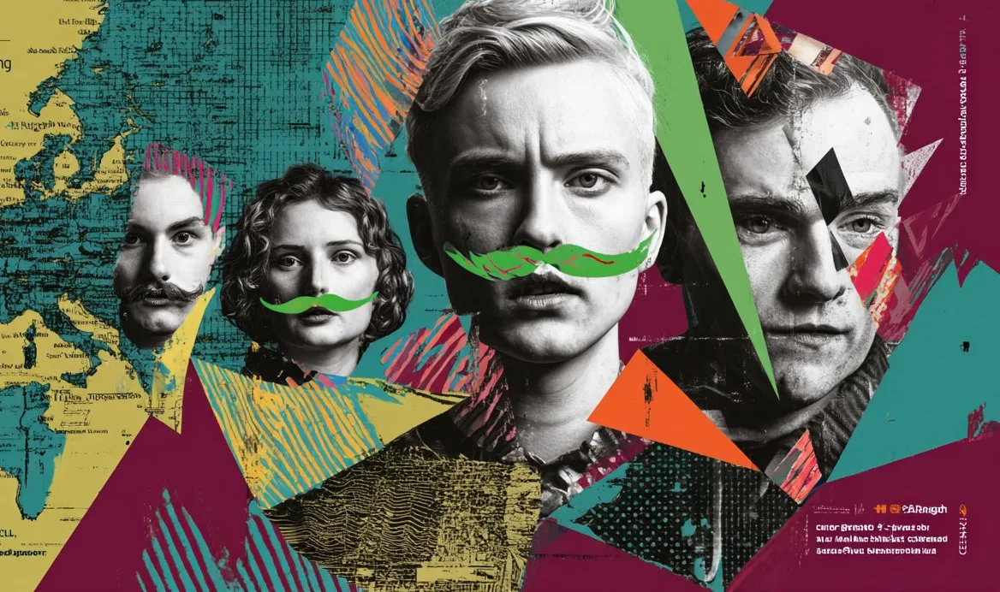

The Consortium
Six partners, one stage
Who builds the platform
From Bratislava to Mariupol-in-exile
The consortium deliberately spans Europe's so-called periphery — capitals and cities where queer performance is made against the current. Each partner hosts, tours and documents; together they carry the platform.
NOMANTINELSLead Coordinator
Queer theatre and civic association in Bratislava — producer of the Drama Queer festival, publisher of QYS magazine, and a long-standing engine of Slovak queer culture. Coordinates the platform.
Sarajevski ratni teatar SARTR
The Sarajevo War Theatre — founded during the siege of Sarajevo in 1992 — is a stage where theatre has always been an act of resistance and survival.
CO.LABS
Brno-based independent performing arts hub for emerging makers — a space for co-creation, residencies and new dramaturgies in the Czech scene.
Wiener Wortstaetten
Viennese intercultural theatre project developing new writing for the stage, with a long practice of amplifying marginalised authors and stories.
Swedish Performing Arts Coalition
National coalition connecting Sweden's performing arts field — bringing structural know-how, networks and touring capacity to the platform.
Mariupol Theatre in Exile (UCPE)
The company of the Mariupol Drama Theatre working in exile — carrying a stage that war tried to erase, and proof of why this platform exists.
Artistic Board
Curatorial care, named
An Artistic Board drawn from across the consortium reviews open calls and accompanies selected residents. Members and profiles will be published here — every PERFORMA-Q decision carries a name, never an anonymous committee.